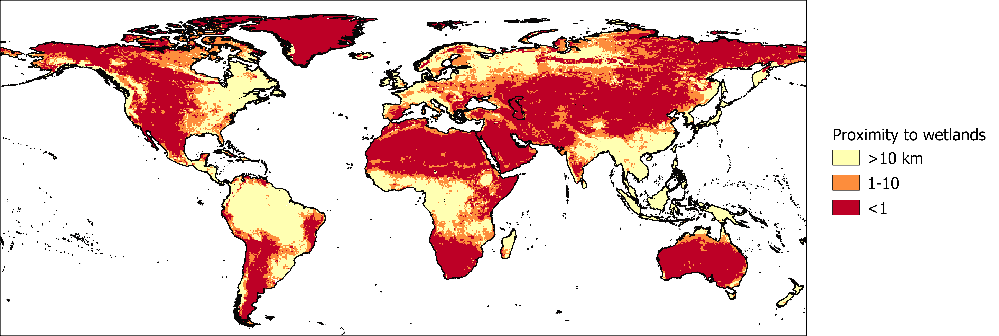

An important measure of groundwater availability is groundwater recharge, or the amount of water transported through the soil to replenish the aquifer. Where groundwater recharge is high, a larger amount of groundwater can be extracted without negatively impacting groundwater availability. This indicator is based on average annual recharge data from the PCR-GLOBWB hydrological model.

Map of modelled groundwater recharge divided into low (yellow), medium and high (red) risk categories.
Reference:
Wada, Y., Van Beek, L. P. H., Van Kempen, C. M., Reckman, J. W. T. M., Vasak, S., & Bierkens, M. F. P. (2010). Global depletion of groundwater resources. Geophysical Research Letters, 37(20). https://doi.org/10.1029/2010GL044571